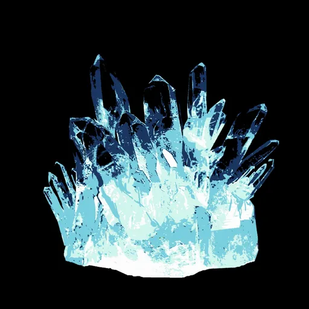

Achilles and the Tortoise
StancemindTypeparadoxTier2TargetselfRankAxiom (rare)KindenchantmentThemecontrolKeywordsSTAGGER · BACKFIRE · FORETELL · DRAWSourcereward
- FREE (3 rounds) — DRAW 1 card each time your STAGGER denies an enemy turn.
- PAID (rest of combat) — DRAW 1 card each time your STAGGER denies an enemy turn.